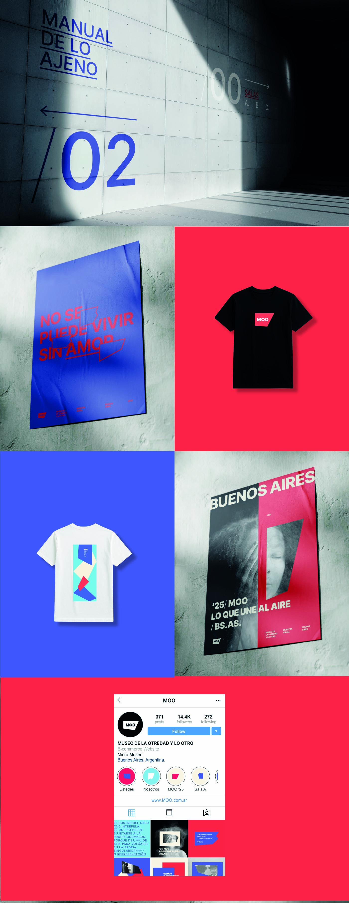

Museo de la Otredad y lo Otro
Somos el Museo de la Otredad y lo Otro, nuestra materia es la cinta de papel Con ella trazamos los bordes que nos separan, pero también los caminos que nos acercan. La cinta no es un muro, es un gesto. Señala sin herir, une sin borrar, divide sin clausurar. Es el recordatorio de que todo límite es parte de un proceso. Aquí la otredad no es una categoría, sino un diálogo continuo. Lo otro no es lo lejano: es lo que nos atraviesa. Este museo no busca representar al otro, sino pensar con el otro.

